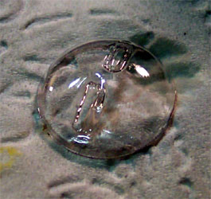
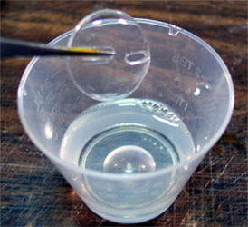

The Complete Future
THE COMPLETE FUTURE
Images and text copyright © 2003-2016 by Matt Swan
Future is a water-soluble acrylic floor coating that was developed by S. C. Johnson Company in Racine, Wisconsin for linoleum flooring. In 2008 S.C. Johnson began a program to move all their floor care products under the Pledge marketing umbrella. For Future this meant a gradual change in labeling seemingly in an effort to gently bring long time users of the product into the new marketing scheme. At right you can see the evolution of the labeling and how the Future logo was made progressively smaller until in 2013 it vanished completely and the Pledge logo became dominant. The formula remains the same. In the Netherlands it is known as "Pronto Wax for wooden floors" with a brown cap or "Parket Plus". In the United Kingdom and New Zealand it is known as "Klear", "Krystal Klear" or "Johnson's One and All". During the 3rd quarter of 2008 the product "Klear" was discontinued, more on that in a moment. Pascoe's "long life self shining floor polish" is now marketed under the brand name "Holdfast" in New Zealand. It has a milky appearance in the bottle and a more powerful ammonia smell than Klear. In France and Belgium it is "Klir" and comes in a white plastic canister with a red square cap. In Belgium and the Netherlands Johnson's "Klir" is now being packaged under a new nametag - Johnson's "Sols Plus" and as "Vloer Plus" -- looks like some serious market share battles going on there. It is the same product just new labeling. In Germany you can find a substitute for this product under the name "Erdal Rex Glänzer" or "Aldi Stodil". In the Czech Republic, Slovakia and Poland you can find S.C. Johnson's "Pronto" in "Tesco" stores. Fellow Modeler Kevan in the Czech Republic tells us that in the Czech Republic and Slovakia modelers use a similar product called "Sidolux" produced by a company called Lakma. This product is also available in "Tesco" stores and behaves in a very similar manner to Future. In Portugal Future is sold under the "Pronto Cera Acrilica" which means literally "Pronto acrylic wax". This can be found in most mini markets and local grociery stores. Xtracolour is distributing a product marked as 'Acrylic Gloss Clear' that smells suspiciously like Future Floor Wax. In Japan and the Philippines it is known as "Johnson's Wipe and Shine". In Argentina it is GloCot.
During the third quarter of 2008 S.C. Johnson distributors in the United Kingdom discontinued the product "Klear". In mid-2009 it appears that the UK S.C. Johnson has reissued a Future-like product called Pledge Multi-Surface Wax, (not to be confused with Pledge multi surface floor finish). The product I'm talking about is packaged in a white bottle with the Klear trademark on it stating that 'the improved formula Klear is now...Pledge multi-surface wax'. The product has a slightly milky color, similar to thinned Humbrol acrylic matt varnish. Fellow modeler Luke R. has began testing the product and reports that on his first attempts the finish was slightly uneven but the stuff dried crystal clear. Be sure to test this product before using it on a model you care about. There have been conflicting reports from U.K. Modelers about its effectiveness. It does seem to work well as a general gloss finish however does not give a good result when used on clear canopies.
Trevor Stutely did some extensive testing of the product and these are his comments:
"In my tests, applying the product neat onto 24 hr dry dark matte paint via a
Paasche airbrush, I found that:
(1) One medium coat of PMSW will gloss, then later fade to semi-gloss when dry
leaving a a slighlly dimpled finish. Use of masking tape on this surface will
later pull the paint when tape is removed.
(2) Two medium coats allow for a smooth, gloss finish and paint will not peel
when removing masking tape.
(3) On applying decals to the double coat finish, using the Micro Sol/Set
system, movement for placing is adequate, yet the decals will not conform
properly to contours nor sit correctly in/on etched or raised panel lines. Any
indentation or bump on the surface of the model will see a crease radiate out
from the center of the decal and curl the edge. Further, any decals with a large
amount of transparent film (modex, squadron and aircraft numbers etc) will show
a silvering even greater than might be expected from even the worst decals. I
used both kit decals (Hasegawa, Tamiya) and after market (Aeromaster) and the
results were identical."
In Israel fellow modeler A. Margalit has done some research for us. He tells us that you can buy Future from Vilenchik's store in Tel-Aviv. A substitute is also available - Sano Super Polish. This is not Future, but has many of the same qualities. It is white-ish when liquid, and becomes transparent when dry. You can use it in the same ways as Future (except it is not recommended for clear parts). Some people have reported some yellowing after many years. The shine it gives after drying is not as pronounced as Future's.
 Sadly Future is not readily available in Russia or the Ukraine however fellow modeler Josey has done some work with a product called Astonish made by The London Oil Refining Company Ltd., Astonish House. This stuff is marketed as a non slip floor polish and is of an acrylic base like Future. It is milky white out of the bottle and dries clear. You can remove it from a plastic surface with ammonia based cleaners however unlike Future it will not dissolve in itself. What I mean by this is should you have a bad piece with Future on it you can just put it into a cup of fresh Future and the old coat will melt away, Astonish will not do that you must remove the old coating with an ammonia based cleaner first then recoat. Astonish is available in some supermarkets in Ukraine and Russia. If you are in Russia and really want Future then you can acquire the product through this site Future in Russia.
Sadly Future is not readily available in Russia or the Ukraine however fellow modeler Josey has done some work with a product called Astonish made by The London Oil Refining Company Ltd., Astonish House. This stuff is marketed as a non slip floor polish and is of an acrylic base like Future. It is milky white out of the bottle and dries clear. You can remove it from a plastic surface with ammonia based cleaners however unlike Future it will not dissolve in itself. What I mean by this is should you have a bad piece with Future on it you can just put it into a cup of fresh Future and the old coat will melt away, Astonish will not do that you must remove the old coating with an ammonia based cleaner first then recoat. Astonish is available in some supermarkets in Ukraine and Russia. If you are in Russia and really want Future then you can acquire the product through this site Future in Russia.
In Australia the Future's past is long and convoluted. Originally it went under the name "Stride Right" or "Super Stride" then the name was changed to "Shine Magic" or "Super Shine". Then, in January 2002 the product was discontinued! Through inquiries to the S.C. Johnson distributor in N.S.W. I have learned of another product that is very similar to Future called "Pledge One Go". Peter Johnstone (a helpful Aussie modeler) has tested this product and reports that it works very well on clear parts and seems to be compatible with model paints and acrylics. He also reports that it demonstrates the wonderful self leveling properties that we see in Future and dries fairly quickly. Another option in Australia is "Pascoe's Long Life" which is an ammonia based produce that behaves in a similar fashion to Future. "Pascoe's" was originally marketed under the name "Rekkit's" and can still be found under this name in the country areas. This product can cause acrylic paints to run if applied too heavily so it will be important to keep this in mind while reading the rest of this article.
In South Africa look for "Mr. Muscle" in a pink plastic bottle with the "Future" logo on the bottom of the label or Johnsons "One Step" which is chemically identical to "Future". In the United States and Sweden there is a product called Mr. Muscle that is an oven cleaner and is no relation to the Mr. Muscle found in South Africa. The US and Swedish product is an excellent paint REMOVER. The South African product bears the Future logo on the bottle and is advertised as an acrylic floor polish, not an oven cleaner. Please do not get the two confused.
In Norway it can be found under the "Clear" name-tag. Thanks to fellow modeler Reggie, I can tell you that in Singapore Future can be found in Handyman DIY stores in Shaw Center under the name "Krystal Kleer." In Malaysia it's available in ACE Hardware stores.
Some members of IPMS Stockholm have been using a product from S.C. Johnson Sweden, called Pledge Klar Polish. It can be bought in ICA and COOP Supermarkets. Dan the Droid Building Viking reported this information for our use - thanks Dan.
Now let's talk about Latin America. In Costa Rica, Nicaragua, El Salvador, Guatemala, Honduras, and Panama but NOT Mexico you can find Future's cousin under the name "Klaro". For this information we need to thank Andres M.. There are two versions of Klaro, one commonly marketed for red tile floors and has a red tint and one without the red tint both with very similar packaging so read the label carefully that you DO NOT buy the red version. Also in Honduras Future is now availible under its own name tag. Juan M. reports that in Argentina the Johnson Company sells the equivalent of "Future Floor Wax" as "Blem brillo acrílico incoloro".
In Taiwan Johsnon's Future is known as "Bi-Fu-le (must-rich-happy)" but oddly enough in China it is "Future" and can be found in Wal Mart stores (yes, they exist in China). In Taiwan "Bi-Fu-Le" can be purchased in "Geant" stores in Taichung and Taipei.
In the Philippines it is Wipe and Shine.
At long last (6/4/04) an internet model distribution company has decided to repackage Future Floor Polish and sell it world wide! Great Models Web Store now has Future Floor Polish available in .75 ounce, 3 ounce and 4 ounce bottles for shipment world wide. The larger quantities come in airbrush ready bottles that just plug into your brush and you're ready to go - is that convenient or what? If you want to purchase the product from them go to their website and search for "Acrylic Wax" or follow this link to the product.
Even more important than 'what it is' is 'where can I get it?' Here is a short list of different retail outlets around the world that have been known to carry Future or it's cousins:
Australia - Coles Supermarkets, Woolworth's, Supa Valu, Newmart, Bunnings.
Belgium - Delhaize Supermarkets, Colruyt Supermarkets.
Canada - Loblaws, No-Frills, Sobeys, Canadian Tire, Wal-Mart, Valu-Mart.
China - Wal Mart
France - Auchan, Leclerc, Intermarche, Atac, Castorama, Carrefour, Monoprix.
Germany - in DroMarkt or Muller stores, Marktkauf and Drogeriemarkt Muller.
ATTENTION GERMAN MODELERS! There is a source for the REAL FUTURE in Germany. A small company is making and selling the product in large bottles and you can contact them directly at this website ..... www.Modellbaufarben.de
Malasia - Ace Hardware
Netherlands - In superstore's like Edah and C-1000. Also look in "Super de Boer" and 'Albert Heijn' which is locally referred to as 'AH'.
New Zealand - Woolworth's, Pricecutter, 4Square, Pak-n-Save, The Warehouse, Countdown, Bunning's Warehouse.
Philippines - Available at Ace Hardware, Home Hardware, the DIY Store, and grocery stores like SM Super/Hypermart and Rustans.
Singapore - Handyman DIY and at a hardware store called Home-Fix in Tampines One
Shopping Mall
Spain - Bosque Verde floor wax "Cera". Not exactly the same but very similar in properties.
Taiwan - Geant
United Kingdom/Ireland - Sainsbury's, Safeway, Tesco's.
USA - Wal-Mart, Giant Foods, K-Mart, Kroger, Winn-Dixie, Food Lion.
If all else fails take a look at US Army/Air Forces Exchanges Services stores (AAFES) and in some large area commissaries or you can call S.C. Johnson direct at 800-848-2588 and ask for the Pledge "Premium Floor Finish with Future" Shine and they will ship some to you. This is a service they offer for customers who cannot find one of their products.
One final note on product availability, if you just have to have the original USA Future you can always order by mail from Amazon.com.


Some time in the dim and forgotten past, a modeler discovered that this stuff, when applied to both side of a piece of clear polystyrene, would make it appear thinner and clearer. It will help to hide minor scratches - simply pour some Future into a small cup and dip your canopy into it or brush it on and let dry - it's a kind of magic! After you dip your canopy (or other parts) in Future, be sure to place a cover over it to prevent dust from collecting on it. Also it is helpful to lay down a piece of tissue paper or a paper towel to set the part on, this will wick away any excess so that you will not have a heavy buildup on the low points. It has been reported that if you leave a small piece of sprue on the part and dip and let dry, then remove the sprue it stop's the splintering you sometimes get when removing parts off the sprue. I have not verified this yet. And finally, let the Future cure for around 48 hours before masking to reduce the possibility of pulling it off with the masking material.
It is also useful as a sealant prior to AND after the application of decals. Before using Future to seal your model with it is important that the kit be clean and free of any oils such as fingerprints. All coats of paint should be allowed to cure (dry) for at least 24 to 48 hours (especially enamels) before applying Future. The sealing coat of Future (usually one coat is sufficient) should be allowed to dry for 24 to 48 hours before applying decals. After decals have been applied and everything has dried completely (24 to 48 hours) you can apply a dull or flat finish safely such as Testors dull coat lacquer or Polly Scale clear flat. Testors Dull Coat is a lacquer so it should be applied in light coats to avoid orange peel.
Some modelers even apply decals using Future to set the decal. Wet your decal as usual in water, but before it goes to the model, dip it in future. It works well and does away with the need for Micro-Sol/Set or similar setting agent. The only downside I have noted is that the Future goes tacky quite quickly and can cause a few problems if you are still trying to place/adjust the decal at that time. The upside is that it pretty much ensures no silvering.
There have been a few reports by modelers that yellowing has occured with all white finishes. I have investigated several of these reports of yellowing and have found in each and every one that it was the underlying paint that had yellowed and not the Future. White paint contains a resin pigment that will yellow under long-term exposure to direct sunlight and there is no clear coat that I am aware of that will prevent this occurrence.
It is not necessary to thin this product prior to use. It can be applied directly from the bottle by either paintbrush or airbrush (15 to 20 psi), clean up with an ammonia-based window cleaner like Windex or if you are in the U.K., Windolene. It is non-toxic and non-reactive. If using the Tamiya Flat Base you may not want to use Windex for clean up as it can react with the Tamiya product and cause gumming in an airbrush. Because Future is a true Acrylic coating washes that are oil or Turpenal based will not affect it as they would lacquer or enamel based coatings.
Future can be applied to your model with either a wide soft paintbrush or via an airbrush. If you choose to use the paintbrush approach be sure that your brush is clear and free of any dust particles before starting. Use slow continuous strokes to avoid causing bubbles on the finish. Once you have brushed a coat on, leave it alone and let it's self-leveling properties take care of itself until thoroughly dry. If you are going to use an airbrush set your delivery pressure at about 15 psi and keep your range at about 6 inches. I prefer to apply Future with the airbrush most often and lay down one or two heavy, wet coats. I have also found that mixing 3 parts Future to 1 part Isopropyl Alcohol before airbrushing really seems to help the finish. Some modelers prefer to apply several light coats but I feel this can lead to a pebbly result sometimes. When using heavy coats should you have a run develop simply touch it with the corner of a piece of tissue to draw off the excess. Should you discover a run after the coat has dried simply use a cotton swab soaked in ammonia based window cleaner and gently rub the run until it has been removed - only takes a minute or two.
Future can also be polished with a non-volatile polishing compound, like Turtle Wax Polishing Compound (the kind in the white container with a green label).
Future does produce a glossy finish so many modelers will introduce a flattening material or only use it as a pre-decal sealer. If you wish to use flattened Future as a final coat here are a couple of suggested ratios of Tamiya flat base for different effects:
1 part flat base to 3 parts Future = very flat
1 part flat base to 10 parts Future = flat
1 part flat base to 15 parts Future = satin
If you get too much of anybody's flat base on the surface of your model you run the risk of making it all go white. No thinning is required just make sure it is well mixed.
Boris in Germany took some time from his schedule and located Erdal Glänzer at a shop called "Marktkauf" and was kind enough to forward a picture of the product for reference, thank you Boris. And another thanks goes to Tim in Belgium for his research on Sols Plus.
You can mix Future with Model Master Acrylic paints and add 20% to 25% of matt clear to obtain a realistic semi-gloss finish. Using Future as a "mixer" for acrylic paints will help them airbrush better, increase the durability of the paint to resist damage, and if you use enough Future, the resulting finish may not need to be gloss coated prior to decaling. It has been successfully used with Polly Scale, Model Master, Gunze Sangyo, and Mister Kit acrylic paints. Results have been poor when mixing Future with Tamiya acrylics and I do not recommend it. Usually around 25% Future to 75% paint will give good results but depending on your project you may want to add a little more Future. For example, if you are doing a fade/blending coat, you might add 80% Future to make a "translucent" paint.
If you screw up the application you can remove the dried Future with Windex, Windolene or simply let it soak in a cup of Future overnight. It is important that the clear parts are clean and free of wax or oils (such as your finger print) prior to application otherwise these contaminants will repel the Future and give unsatisfactory results in the end.
On clear parts, Future is a good protecting agent, including giving a good hedge against the 'chlorosis' white spray effect that cyanoacrylate glues can cause on windows and such.
Some modelers are using Future as an adhesive for photo etched and brass parts or even to attach canopies. The bond is somewhat tenuous and I think I'll stick (little pun there) to super glue myself.
Future can be used for making mud puddles or standing water when doing a diorama. It's not as thick as epoxy, but it's easier to work with. And, it doesn't take nearly as long to dry as resin type clear mediums. Pastel powders can also be mixed with it to create grime, mud, yuck, or whatever.
Use Future for instrument dial faces. It may take many more applications than epoxy, but you don't get the domed effect you do with epoxy, and Future is clearer.
When creating dioramas or display bases utilizing Sculpey or other clear molding materials for water situations coat it with Future for a really wet look.
You can add talcum powder to Future to make quick drying seam filler that is hard, but sands easily.
If you want to create your own shades of transparent colors, food coloring can be mixed with Future for the desired effect. Tamiya clear colors work well as toners also. If you mess up, you haven't invested as much money as you would combining clear paints.
For those gold tinted canopies on contemporary jet fighters try adding a few drops of Tamiya acrylic gold to a couple teaspoons of Future.
Future as a sealer over decals allows the modeler to use an oil based paint mixture thinned with Turpenoid to color to darken panel lines etc. The Future will prevent the oil paint from marking the surface and you can use a paper towel or q-tip to remove as much as you want until you get the effect that you desire.
If you do your own mold making and resin casting, Future is a great clear coat to use on your masters or molds to ensure a clean casting. You can either brush it or spray it on. The clay you use to make your master mold can be used over and over again, as the Future does not seem to harm it.
Mix a little SNJ powder with Future and have a rock hard gloss silver finish. Add about 4 "blobs" of SNJ powder to a 1/2 oz jar of Future and mix well. Using low pressure like 8 or 10 psi, apply two or three light coats, the last one a little heavier. Wait about 45 minutes and then buff with some more SNJ powder. This will create a very convincing aluminum finish. After drying overnight, this produces a very durable finish. Another plus to this technique verses using a series of lacquer primers and lacquer paints is that if you are dealing with very fine panel lines you do not run the risk of compromising those lines with paint buildup. Thanks to Michael S. for experimenting with this process.
Future also makes a great barrier coat between styrene and lacquer-based paint that would otherwise attack the plastic. Some modelers use it as a primer coat before applying lacquer based paints such as Alclad.
A common problem reported with Future is a condition referred to as "Orange Peel". I want to first talk about the causes of "Orange Peel" which will, for the most part, indicate some solutions. "Orange Peel" is a dimpled surface, like the skin of an orange, resulting from Future droplets drying too much to level out and flow smoothly together (poor coalescence).
Root causes of "Orange Peel" are;
1. Improper flash or drying time causing subsequent coats to lose solvents to the dry coat.
2. Extreme shop temperature causing the droplets to lose more solvent and dry out before they can flow and level properly.
3. Improper gun adjustment and techniques.
4. Improper drying by gun fanning causing the paint droplets to dry out before they have a chance to flow together.
5. Improper drying time for previous coats of paint can result on 'out-gassing' preventing the Future from leveling out.
With these causes in mind potential solutions become apparent.
1. Allow proper dry time for undercoats and topcoats.
2. Schedule painting to avoid temperature and humidity extremes.
3. Use proper gun adjustments, techniques, and air pressure.
4. Allow sufficient flash time. Do not dry by fanning.
In mild cases, a second, wet coat of Future or a mild polishing compound for enamel or rubbing compound for lacquer may help. In severe cases, remove the Future with Windex or comparable product and recoat.
Additional alternative solutions are:
1. Add a couple drops of a liquid dishwashing detergent (like Ivory, or Dawn, or such) to the jar holding the Future to be sprayed. What that does is help the Future 'break' it's natural surface tension and help it to 'level out' faster. Also, mix in about 15% to 20% Polly Scale airbrush thinner.
2. Another avenue would be to add a few drops of Windex to the paint cup to reduce the surface tension of the Future.
3. A few modelers have been happy with the results from sanding the surface with 3200 or even 6000 grit sandpaper.
4. Try using a little 80% rubbing alcohol to thin the Future with and adjust your airbrush air pressure to about 15 to 20 psi.
All of these approaches have worked for modelers in the past. Regardless, this pebbling will not affect the application of decals and in most cases disappears once a final dull coat is applied. I have been using Future for so long that I cannot remember the first model that I coated with it and have never had this 'pebble' effect happen so these possible solutions are as reported by other modelers and caution should be exercised when experimenting with them.
Snake Skin: If you are using enamel paints and they have not been allowed to cure completely you may get a snake skin effect in the Future. It is important that your underlying coats of paint be fully cured before applying Future. It is also imperative the the surface be clean of oils and fingerprints. Before coating your model with Future let it soak in a mild detergent solution and then rinse with warm water. Let it dry completely before proceeding.
When using flat paints more Future is required to get the glossy finish as a flat surface is, in reality, not flat. It is very rough on a microscopic level to break up light reflection causing it to look flat and this roughness must be filled in by the Future coating. You recreate the flat look with a final coat of flat finish after all decals and weathering has been completed.
Decal Setting Solution Reactions: Strong decal setting solutions, like Micro-Sol, will react with Future that has not cured fully and create a white haze. Do not dispare, this haze will disappear when you apply a second coating of Future. Remember to always allow your Future to cure for a minimum of 24 hours before applying decals.
Stripping Future:
Future can be stripped from the canopy in several ways.
1. Windex.
2. Soak in Future overnight.
3. Chameleon Paint Stripper.
4. Ammonia.
I want to talk about Windex for a moment here. Windex is an ammonia based window cleaner, it has a transparent blue color to it. In the United Kingdom a comparable product is Windolene or if you are in New Zealand you can look for "Mr. Mussle". In Singapore you should be looking for a product called "Kao Glass Magiclean". What it's called is not so important as what is in it - ammonia. In the Netherlands and in Portugal the equivalent of Windex is Glassex.
A cautionary note on Humbrol masking liquid, Humbrol is an ammonia based masking liquid and the ammonia will break down Future so DO NOT use this product to mask over Future floor polish. However, with this same information in mind, you can use Humbrol masking liquid to strip Future from select areas of a model without harming the underlying coats of paint.
When using Future in an airbrush, to clean your brush all you need to do is shoot some Windex or other ammonia based window cleaner through your airbrush. I know that some modelers like to shoot straight ammonia through their brushes but this can cause some pretty strong odors - similar to a barnyard. I don't know about you but I got off the farm many years ago and do not care to be reminded of the olfactory joys of my childhood.
Okay, so what if you are a little careless and get the Future on your hands? Washing with soap and water will take care of you.
One modeler reported that he had fogging problems after using superglue, here is an excerpt from his solution using ammonia:
I dipped a q-tip into pure household ammonia and started to scrub the canopy. Well, it worked PERFECTLY. In less than 30 seconds the future was stripped, and the fogging went with it, and I was back down the original clear plastic surface, undamaged. Amazingly, even though I had painted the frames after dipping in future, the ammonia did not attack the future under the painted frames - the paint stayed intact.
So next time you dip a canopy in future and something goes wrong, like dust, a fingerprint, or a thick spot in a corner, just take a q-tip and straight ammonia and you can undo it in seconds.
Recently there has been speculation on the various forums that the formula for Future Floor Finish had been changed. This is false, the formula has not been changed since 1992 when S. C. Johnson added fragrance to the formula.
Recently I have had some reports of the product "Klir" yellowing in the bottle over time so pay attention if you are using this version of Future. It does seem like there are some minor variations in the formula as the product travels around the world so it is recommended that you always test a new product on some scrap plastic to 'get the feel for it' before risking an expensive kit.
7/9/07
Future and Simple Green
Future is great for creating a good medium gloss finish and with repeat layers and light sanding at 800 grit between layers can generate a fairly high gloss but if you want something truly outstanding then you need some Simple Green. Simple Green is a household and industrial cleaner found throughout the United States. It can be purchased in concentrated form or premixed. Most grocery stores carry the pre-mixed variety. In a small cup mix three parts Future with one part pre-mix Simple Green. Apply to your model with an airbrush using 15 to 18 psi pressure and about four to six inches of distance. Apply an even slightly wet coat then immediately cover the model with a large bowl or clean box because this will be a major dust magnet. Allow to cure overnight. When you remove the cover your model may appear to be wet still but no, this is the finish that is achieved - a STILL WET LOOK! You can apply a second coat if needed but be sure to cover the model again during the cure process. I failed to do this with one of my cars and it attracted a collection of fine dust particles and they really show up on such a high gloss finish. The Future seems to dry with the same hard finish as when used normally. Due to the high gloss aspect fingerprints will show up very easily so keep a lint free polishing cloth handy for when you cannot resist touching it.
I hope that you have found this information to be helpful. If you have any other information or tips or names for Future in other countries that you think should be included in this lesson please forward them to me at:
Webmaster@SwannysModels.com
Last updated 3/2/2015
The adventure continues at Swanny's Models. This time around we take a look at working with a vacuform conversion kit.  This video takes the modeler through all the steps of learning how to work with vacuform model parts, resin and photo etched parts are revisited and the process of achieving a realistic natural metal finish utilizing lacquer based paints is covered in addition to some other goodies. Here you can purchase your copy of Advanced Modeling Skills; Vacuform Conversions & NMF.
This video takes the modeler through all the steps of learning how to work with vacuform model parts, resin and photo etched parts are revisited and the process of achieving a realistic natural metal finish utilizing lacquer based paints is covered in addition to some other goodies. Here you can purchase your copy of Advanced Modeling Skills; Vacuform Conversions & NMF.
7/1/09
Swanny's Models instructional video Volume #2 is now ready for distribution. This video covers  advanced modeling skills required to assemble and paint resin cockpits as well as everything involved in building a photo etched cockpit. Acetate instrument details are discussed, how to anneal photo etch sheets is shown, basics of working with vacuformed canopies are covered and more. This is well over four hours of modeling bliss and you can get yours now right here. Advanced Modeling Skills; Resin and PE Cockpits.
advanced modeling skills required to assemble and paint resin cockpits as well as everything involved in building a photo etched cockpit. Acetate instrument details are discussed, how to anneal photo etch sheets is shown, basics of working with vacuformed canopies are covered and more. This is well over four hours of modeling bliss and you can get yours now right here. Advanced Modeling Skills; Resin and PE Cockpits.
8/27/07
Swanny's Models is proud to announce the re-release of the first in a series of instructional modeling DVDs. This DVD will take the modeler from the first parts preparation steps all the way through decaling and basic weathering. The primary purpose of this video is to assist the new modeler in achieving good results early. You can follow this link for more information on the video and ordering information. Basic Model Building Skills & the P-40K.
8/27/07
Did you miss out on the first issue of Swanny's Models Instructional Videos and are trying to catch-up? Here is  your chance to pick up both DVDs and save a few bucks. This link will take you to the package deal location where you can get both Volume #1 "Basic Model Building Skills" and volume #2 "Advanced Modeling Skills"Two Volume Set.
your chance to pick up both DVDs and save a few bucks. This link will take you to the package deal location where you can get both Volume #1 "Basic Model Building Skills" and volume #2 "Advanced Modeling Skills"Two Volume Set.
8/27/07